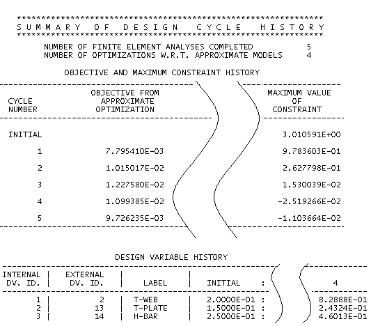

后处理
优化完成求解过程后，您可以在后处理导航器中查看每个设计循环的响应结果。而且，还会在 Nastran .f06 文件中写入有关优化器的设计循环迭代的完整报告。
-
该 .f06 文件会报告请求输出的每个设计循环的设计变量、约束、响应和目标
-
默认情况下，会报告初始设计循环和最终设计循环，但可以使用 NASPRT 参数对所有设计循环请求输出
-
在 SOL 200 求解完成后，使用文本编辑器打开 Nastran .f06 文件
-
该 .f06 文件中包含优化器算法对设计模型的详细分析。所提供的详细程度取决于您所定义的输出控制参数
